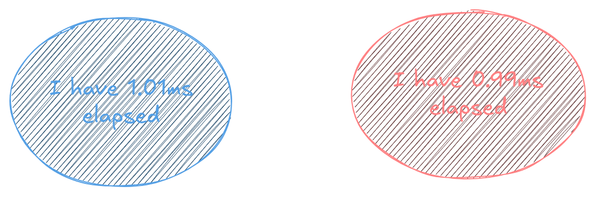
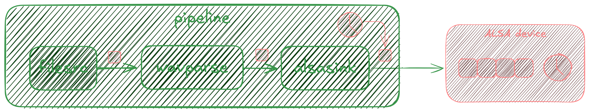
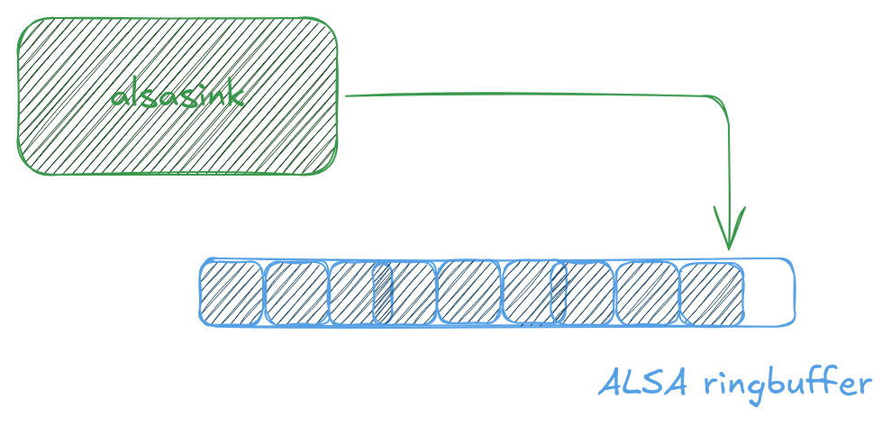
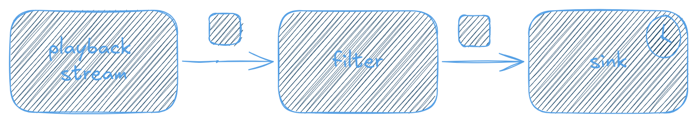
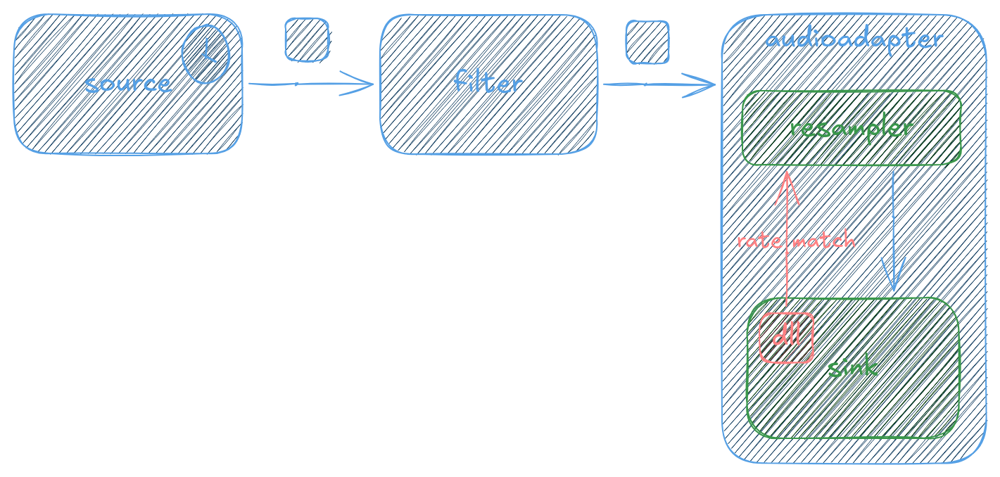

It’s time for some ⏰ rate matching!
Arun Raghavan
Me
- GStreamer, PipeWire, PulseAudio person
- Founder @ asymptotic
- Help build cool things with these projects
- Contribute back to upstream better
- ???
- Positive feedback loop
Clocks
- Devices derive time from a clock
- A repeating signal with a fixed frequency
- Generated by a quartz crystal
Time is an illusion
- Different devices will have different crystals
- With slightly different notions of time

What does 1ms even mean?
The rate matching problem

- Two devices with different clocks
- Producing data every “1ms”, say
The rate matching problem

- What happens if the source is slower than sink
- Or if the source is faster than the sink?
The rate matching problem

- Source slower than sink: Underflow!
- Sink slower than source: Overflow!
GStreamer: Clocks
- Clocks are represented via
GstClock
- Report the current time
- Wait until a certain time
GStreamer: Clocks
- One for the
pipeline
- Elements synchronise to this
- i.e. decide when to render data
GStreamer: Clocks
- Elements can provide their own clocks
- System clock
- Audio clocks
- NTP, PTP, netclock
GStreamer: Clocks
- Pair to system clock for continuous output
- Linear regression
- t^1_{audio} \implies t^1_{sys}
- t^2_{audio} \implies t^2_{sys}
- \therefore t^{now}_{sys} \implies
t^{now}_{audio}
- With some heuristic filtering
GStreamer: Clocks

A non-live pipeline
GStreamer: Clocks
 A live pipeline
A live pipeline
GStreamer:
Rate matching
- Only some elements sync to clock
GstAudioBaseSinkGstAudioBaseSrcGstAudioAggregator
GStreamer: Rate matching
They may…
- Skew
- Resample
- Custom
GStreamer: Rate matching
- Skewing is most common
- “Spread” out the error
- Less audible glitches
GStreamer: Rate matching
- Sink faster than source
- Insert smaller gaps instead of underflowing

GStreamer: Rate matching
- Sink slower than source
- Overwrite smaller chunks instead of overflowing

GStreamer: Rate matching
- Resampling
- Magical mathematics
GStreamer: Rate matching
- Produce the correct number of samples
- Implemented as linear interpolation
- Naïve and low quality
- Limitations of
GstAudioRingBuffer
GStreamer: Rate matching
- Custom
- Let the application do something
- Like adjust the audio clock itself
PipeWire: Model
- Also a graph
process() cycle- Quantum-sized buffers
- Much like JACK

PipeWire: Drivers
- One driver per graph
- All other nodes are followers
- Provides tick-per-quantum
- May or may not participate in data flow
Detour: Control systems
 Closed loop control
Closed loop control
PipeWire: Delay-locked loops
 Rate matching as a control
system
Rate matching as a control
system
PipeWire: Delay-locked loops
- For each cycle, we have:
nsec: Current cycle start timenext_nsec: Expected next cycle start time- The relative rate of the driver and device clock
PipeWire: Rate matching

PipeWire: Rate matching
- Can adapt to arbitrary clocks
- Can also adapt across graphs & mismatched quanta
- Resampler does fine-grained adjustment
- Converges quickly, hovers in a tight range
- Can use other mechanisms too
PipeWire: Rate matching references
- Heavily inspired by JACK
- Bunch of work by Fons Adriaensen
Observations
- System clock as a source for continuous time
- Open-ish (linear regression + heuristics) vs. closed control loops
- Audio clocks work well
- Network clock jitter can be problematic
Observations
- You can skip
GstAudioRingBuffer, like
- Decklink elements
pipewireaudiosinkpulsedirectsink
Bonus slide
 cross-graph rate matching
cross-graph rate matching